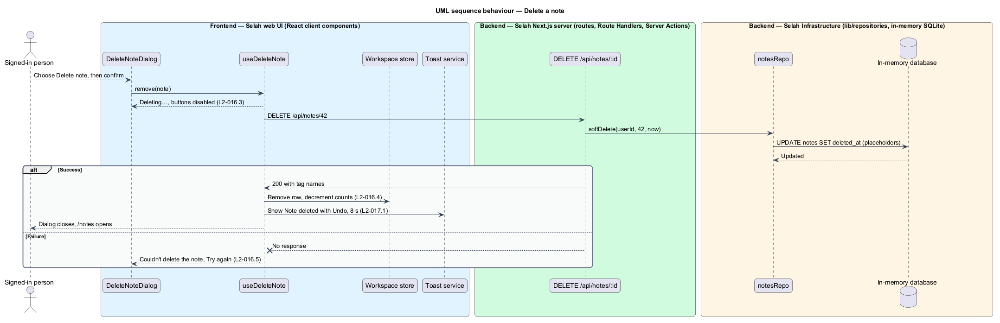

Fourteen steps: what to type, what to prompt, how to check. Any stack, any app.
Build a small full-stack reference web app with <your stack>. It is a reference app, not production. <What it does, in two or three lines.> <Look and feel: colours, type, light and dark.>
Check: could a stranger read it and know what to build?
What would be a good unique name for a small notes app? Consider a particular meaning or association: biblical, abstract, descriptive.
Got: Selah, Zikaron, Baruch, Marginalia. Check: say it out loud.
$ gh repo create YOU/your-app --public --description "..."
$ gh repo clone YOU/your-app You appear to have cloned an empty repository.
$ cp -r skills/* .claude/skills/ $ cp -r skills/* .agents/skills/ $ diff -r .claude/skills .agents/skills
Check: the diff prints nothing.
/writing-agent-instructions
The project shall be <what it is, the stack, your guardrails>.
Got: AGENTS.md (125 lines; keep it under 150) plus pointer files. Check: your guardrails are in it.
$ claude -p "In two short bullet lists: (1) the names of the skills available to you in this project, (2) a one-sentence summary of AGENTS.md. Do not use tools." --model sonnet
Check: it lists your skills and summarizes your file.
/writing-html-mocks
Got: 65 HTML files · 16 screens · 63 states · light and dark · 108 of 108 contrast pairs pass.
t flips light and dark/extracting-design-systems
Got: 65 pages · 254 tokens · 134 contrast pairs pass. Rule: no one-off colours.
/writing-requirements
Given the toast, when "Undo" is chosen within 8 seconds, then the note returns with the same id, title, text, tags and last-edited time.
Got: 11 high-level · 49 detailed · 281 criteria. Check: every criterion is testable.
/writing-design-documents
Got: 28 designs · 160 diagrams. Check: each design points back to its requirement.

/estimating-designs
Got: 99 developer-days. Descope or keep: you decide before any code.
Implement the next slice from the estimates, one acceptance criterion at a time. Write the failing end-to-end test first, then the code that makes it pass. Then run unit tests, end-to-end tests, typecheck and lint, and update the progress log.
Rule: no code without a failing acceptance test.
unit and end-to-end tests
typecheck and lint
progress log updated
Selah today: 172 unit tests and 280 acceptance tests pass.
/recording-demo-videos
Run it once your slices are done.